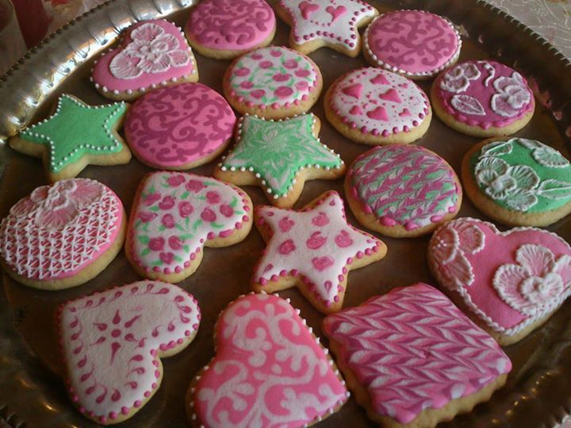
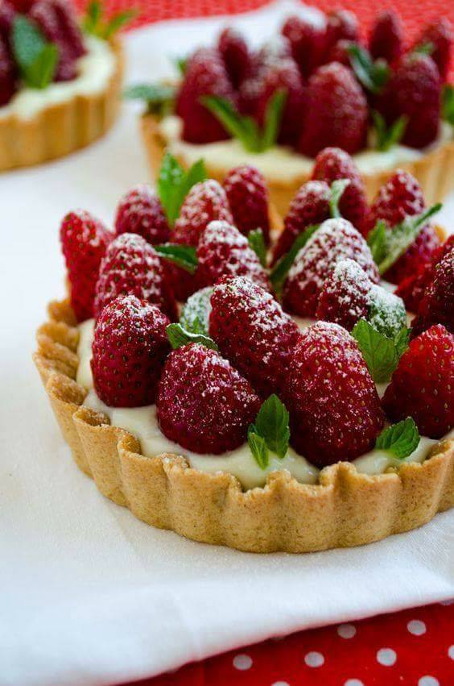
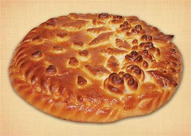

Торты
Тортом называется традиционное праздничное блюдо, которое подается к чаю в день рождения, на свадьбу, корпоратив
и прочие мероприятия. Такой десерт с удовольствием кушают и дети, и взрослые. Сегодня на прилавках магазинов
присутствуют самые разные вкусности, изобилие которых нередко сводит потребителей с ума. В список с названием
тортов, который предоставлен ниже, входят различные варианты этих лакомств. Они отличаются между собой по
способу приготовления, типу коржей, сложности конструкции, начинке, вкусу и другим критериям. Особой
популярностью пользуются лакомства, выпекаемые целиком. Они готовятся из дрожжевого теста и часто начиняются
орешками, вареньем, медом и фруктами. Более дорогостоящими являются тортики, при создании которых каркас и
начинка готовятся отдельно.
Печенье

Два замечательных, очень вкусных рецепта печенья, которые можно смело дарить в качестве новогоднего гостинца.
Например, можно упаковать его в красивую банку или самодельный мешочек. Я уверена, что Ваши друзья и близкие
оценят такой милый подарок, согреты теплом Ваших рук.
Пирожные

Пирожные — штучные кондитерские изделия разнообразной формы с художественно отделанной поверхностью. Масса их колеблется
от 17 до 110 г. В литературе нередко пирожные не выделяют как отдельный вид кондитерских изделий. В частности, В. В.
Похлёбкин, автор популярных изданий по кулинарии, указывает, что пирожные — это русское наименование кондитерских
изделий, представляющих собой либо различные торты, разрезанные на небольшие равные прямоугольнички, либо специально
приготовленные печенья с кремовой промазкой или начинкой.
Пироги

Пиро́г — хлебобулочное изделие из теста с начинкой, которое выпекается или жарится. Начинка для пирогов может
быть сладкой (ягоды, фрукты, творог, мак) или несладкой (рыба, мясной фарш, печень, картофель, грибы и т. д.). Масса
пирога от 0,5 кг и выше.
Рецепты пирогов есть практически в каждой национальной кухне. Существует большое количество различных рецептов
пирогов. Тесто для пирогов может быть дрожжевым (сдобным или обычным), бисквитным или слоёным, разнообразных начинок
и внешнего вида: пироги бывают открытые (ватрушка, шарлотка), закрытые (кулебяка, курник), полуоткрытыми (расстегай,
эчпочмак) и слоёные (штрудель).
Некоторые пироги используются в обрядах (сватовство, поминки). На Руси пирог — символ домовитости.
О происхождении слова «пирог» существуют различные предположения, например, суффиксное производное от слова
«пир». Есть и версия происхождения от праславянского *руrоgъ, связанного с др.-русским пыро «полба», того же
корня, что и «пырей». Также есть версия, что слово происходит из тюркского, чув. pürǝk, крым.-тат., тур., чагат.
böräk «пирог с мясом».